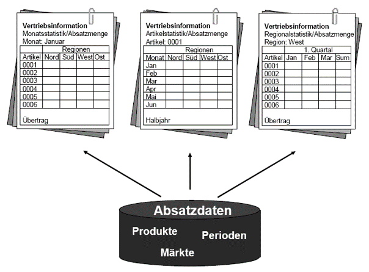
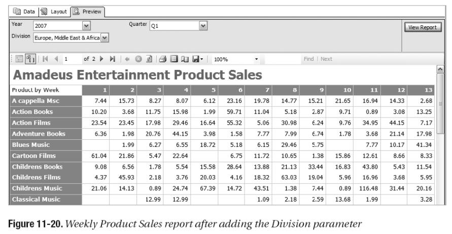
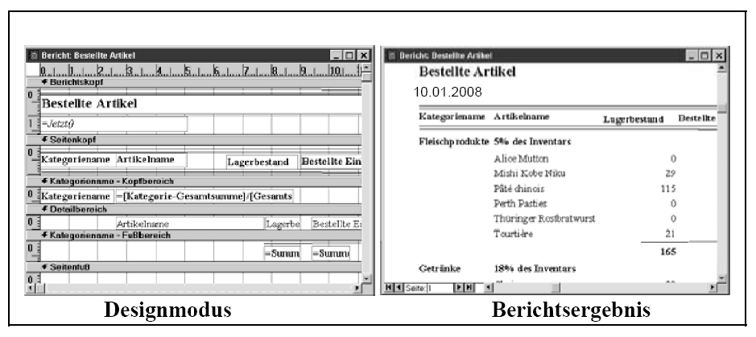
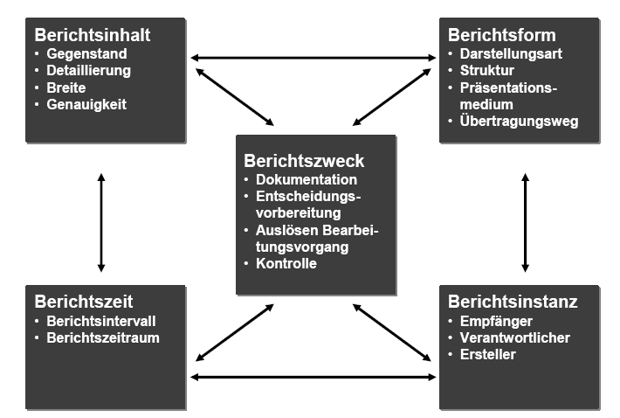
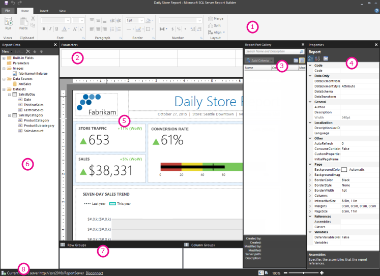
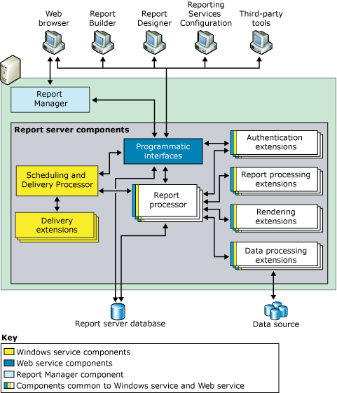
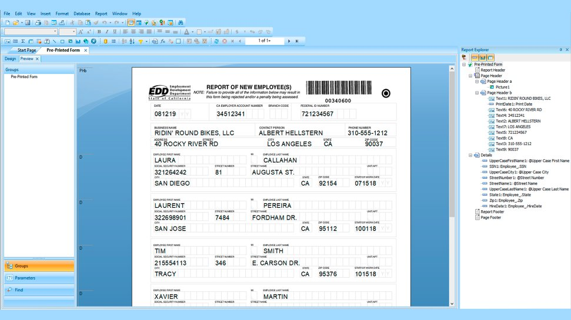

Business Intelligence
Reporting
Gliederung
- Begriffsdefinition
- Beispiel: Report
- Betriebliches Berichtswesen
- Berichtsgeneratoren
- Report Builder, SSRS, Crystal Reports, OSS
- Praxisbeispiel
- Mobile Reporting (Mobile BI)
- The Future of Reporting
Einordnung

Begriffsdefinition
Reporting
Betriebliches Berichtswesen
Ziel: Die Mitarbeiter ereignis- oder zeitgesteuert mit relevanten Informationen versorgen. Es umfasst alle Personen, Organisationseinheiten, Vorschriften, Daten und Prozesse, die bei der Erzeugung und Weiterleitung von Berichten beteiligt sind.
Berichte: Dokumente, die unterschiedliche Informationen für einen bestimmten Untersuchungszweck miteinander kombinieren und in aufbereiteter Form vorhalten.
Zielgruppe sind betriebliche Fach- und Führungskräfte. Sie bekommen in periodischen Abständen oder im Bedarfsfall bestimmte Fakten geliefert, die helfen, Trends zu erkennen, Planungen durchzuführen oder Kontrollaufgaben wahrzunehmen.
Beispiel: Report

Beispiel: Report

Beispiel: Report

Betriebliches Berichtswesen
Einsatzbereiche und Nutzungspotenziale
Potenzielle Empfänger der Reports
- Fach- und Führungskräfte aller Hierarchieebenen und Abteilungen
- Vor allem jedoch die Informationskonsumenten: Top-Management bis Sachbearbeiter.
Standardberichte: Periodisch. Befriedigen Informationsbedürfnis. Identische Form für unterschiedliche Empfänger. Eher historisch.
Abweichungsberichte: Zur Früherkennung bzw. Frühwarnung auf Basis geeigneter Indikatoren.
(Bedarfsbericht)
Betriebliches Berichtswesen
Betriebliches Berichtswesen
Klassifizierung
flowchart TD A[Berichtssysteme] --> B[Aktive Berichtssysteme] A --> C[Passive Berichtssysteme] B --> D[Periodische Berichtssysteme] B --> E[Aperiodische Berichtssysteme] C --> F[Ad-Hoc-Berichtssysteme]
Betriebliches Berichtswesen
Merkmale zur Kennzeichnung und Gestaltung von Berichten

Betriebliches Berichtswesen
Prozesse
flowchart TD A[Berichtsgestaltung und -erstellung] --> B[Berichtsverwaltung] A --> C[Berichtsverteilung] B --> C A --> D C --> D B --> D[Berichtsaufnahme und -diskussion]
Berichtsgeneratoren - Reportingtechnologien
Berichtsgeneratoren
- Software-Werkzeuge, die über die reine Abfragefunktionalität hinaus noch Möglichkeiten zur inhaltlichen und optischen Anreicherung bieten.
- Einsetzbar für Standardberichte, Ad-hoc-Auswertungen (und freien Navigation im Datenbestand).
- Scheduling, Rollen- und Sicherheitskonzepte, Push vs. Pull Verfahren
- Pixelgenaues Layouting
Dezentrale Organisation des Berichtswesens
- mit vollständiger Funktionalität am Arbeitsplatz
- Die steigende Quantität und Komplexität unternehmungsinterner Berichte ist mit den herkömmlichen Berichtsgeneratoren und Hardwarearchitekturen kaum noch zu bewältigen.
- Konsistentes Unternehmungsreporting?
- Fehlende Dokumentation (der Reports und der Datenbanken)
Berichtsgeneratoren
Microsoft SQL Server Reporting Services (SSRS)

Bereitstellen von relevanten Informationen im gesamten Unternehmen
Microsoft SQL Server Reporting Services ist eine vollständige, serverbasierte Plattform für eine Vielzahl an Reporting-Anforderungen.
Erstellen Sie ausführliche Berichte, nutzen Sie umfangreiche Visualisierungsfeatures sowie einzigartige und flexible Designmöglichkeiten.
Verwalten und skalieren Sie die Auslastung durch das Reporting.
Bereitstellen: Stellen Sie personalisierte, interaktive Berichte im Intranet bzw. Internet bereit und bieten Sie so allen Benutzern dynamisch die für sie relevanten Berichte an.
Berichtsgeneratoren
SSRS - Komponentenarchitektur

Berichtsgeneratoren - SAP Crystal Reports
Create Reports

Flexible Reporting
Add flexibility to your reporting with the use of product wizards and parameters.
Pixel-perfect documents
Provide pixel-perfect documents and forms with highly formatted contents
Embed images and bar codes
Go beyond regular business reports by embedding dynamic images and bar codes.
Sharing and exporting
Easily report sharing by exporting data to popular formats
Berichtsgeneratoren - SAP Crystal Reports
Share Data
User interface in multiple languages
Benefit from a user interface available in up to 28 languages.
Defined user rights
Manage user rights to access, view, refresh, export, or print reports.
Mobile access
Enable mobile access to self-service business intelligence reports.
Access Data
Flat files
Connect to flat files like Microsoft Excel, text files, web logs, XML, and file systems.
Databases
Connect to databases like SAP HANA, Microsoft Access, Microsoft SQL Server, IBM DB2, Oracle, MySQL and PostgreSQL.
Data sources
Connect to JDBC and ODBC data sources as well as specific applications such as Sage or Salesforce.
Berichtsgeneratoren - Open Source
| Entwickler / Anbieter | Aktuelle Version | Weitere Informationen | |
|---|---|---|---|
| BIRT Project Management Committee / Actuate | Eclipse BIRT | 2.5.2 |
www.eclipse.org/birt www.actuate.com |
| Jaspersoft |
iReport (Jasper Server) (JasperReports) |
3.1.7 (3.7.0) (3.7.1) |
jasperforge.org www.jaspersoft.com |
The Future of Reporting
Literatur
- Gluchowski, P., Gabriel, R., & Dittmar, C. (2008). Management Support Systeme und Business Intelligence: Computergestützte Informationssysteme für Fach- und Führungskräfte. Berlin: Springer